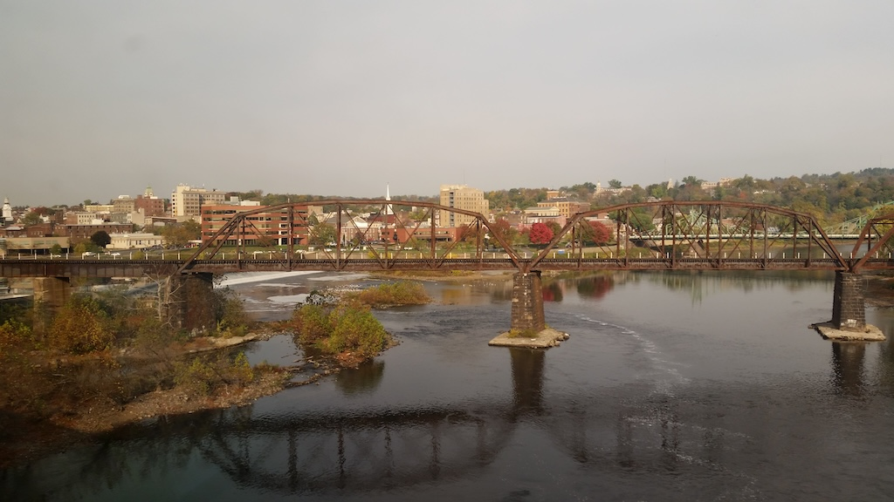

The Pennsylvania Department of Transportation’s study on restoring passenger service to the Lehigh Valley is out and you can read it on the Lehigh Valley Planning Commission website. The study looks at three possible corridors: both Lehigh Valley-New York and Lehigh Valley-Philadelphia, and Lehigh Valley-Reading for good measure. All previously had passenger rail service, some as late as 1984 if you include commuter rail service to Phillipsburg.
There’s a lot of good information in the study and I had a good time reading through it. I remain skeptical that anything will come of this. There are political, financial, and operational obstacles to any restoration. None are fatal by themselves, but taken together they’re a real challenge. I’ve often described the Lehigh Valley to New York problem as “who wants to pay for transporting people from Pennsylvania across New Jersey to New York City?” Lehigh Valley-Philadelphia at least keeps the problem within one state, but the situation is no less difficult.
My plan over the next few days is to blog about the different alternatives, explaining in layman’s terms what the benefits and challenges are with each. These are the five alternatives in the study:
- Allentown to New York via Hackettstown and the Morristown Line.
- Allentown to New York via High Bridge and the Raritan Valley Line.
- Allentown to Philadelphia via Lansdale and SEPTA Main Line.
- Allentown to Philadelphia via Norristown and the Norristown branch.
- Allentown to Reading via the Reading Line.
Amtrak’s Autumn Express excursion ran from New York to Harrisburg via Reading in 2016. It was well-patronized–who doesn’t love rare mileage? The demand is almost certainly there. It’s just a question of someone having the will to resolve all the obstacles and actually build the damn thing.
